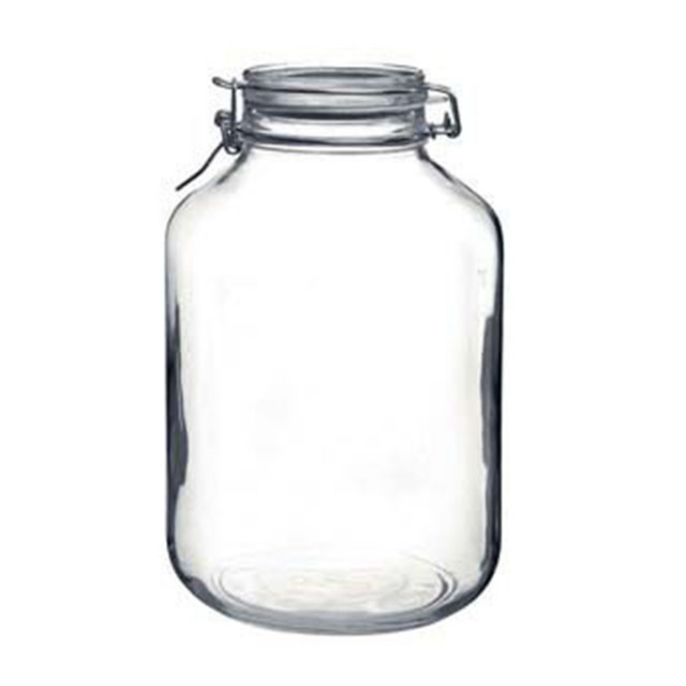

유리 분리수거 안내

유리 GLASS
#유리병 #유리컵
재활용: 가능
분류: 유리류
악취: 없음
분리배출 방법
- 유리 쓰레기는 깨지지 않도록 주의하고, 유리병이나 유리컵 등은 깨끗이 세척해주세요.
- 유리 쓰레기는 통으로 버리면 안전 문제가 발생할 수 있으므로 깨진 유리는 신문지나 비닐에 싸서 버려주세요.
- 유리병의 뚜껑은 따로 모아서 분리수거합니다.
유의할 점
- 유리는 재활용이 가능한 재료입니다. 재활용을 위해 유리 쓰레기를 분리수거하여 정확한 분리배출이 필요합니다.
- 유리 쓰레기는 재활용 공정에서 깨진 유리 때문에 문제가 발생할 수 있으므로 신문지나 비닐에 싸서 버려야 합니다.
- 유리병의 뚜껑은 유리와 별도로 모아서 처리해야 합니다. 뚜껑을 제거하여 투명 플라스틱류로 분리수거해야 합니다.